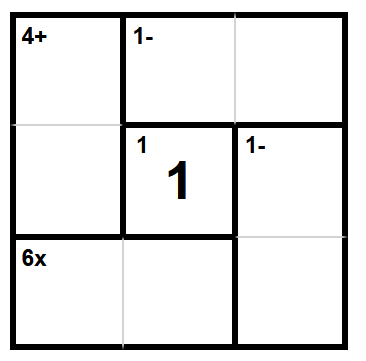

My Projects
SuperCalc
SuperCalc, or KenKen® or Kendoku®, are mathematical puzzle games that are similar to Sudoku®. The objective is to fill out a N by N Latin square while still adhering to the clues provided. Here is an example puzzle: These puzzles are addictingly fun, and I decided to implement my own version of KenKen®, both as an exercise in development but also to add my own advanced features, such as more complex mathematical operations, the use of the numbers 0 to N-1 instead of 1 to N, and even hidden clues. If you are interested in playing an interactive SuperCalc puzzle, click here.